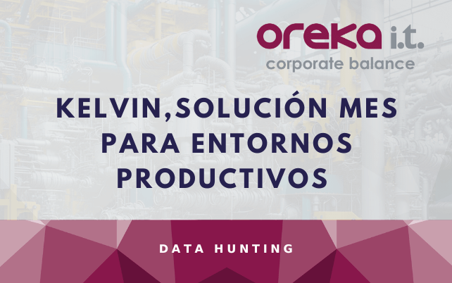

KELVIN
Tratando de facilitar el camino a nuestros clientes, en Oreka IT hemos desarrollado Kelvin, nuestra solución MES para entornos productivos. Kelvin está diseñada para integrarse totalmente con SAP, ya sea en entornos R3, S/4 HANA o SAP Business One, permitiendo que la información fluya desde el entorno productivo al ERP de una manera natural y en tiempo real.
Beneficios que ofrece KELVIN:
- Incrementando su eficiencia y productividad: Kelvin permite optimizar los procesos de producción, aumentar la eficiencia y mejorar la productividad.
- Mejorando la toma de decisiones: Kelvin interconecta todos los procesos de producción y lleva los datos al ERP de la empresa, de este modo, se obtiene una visión completa de todas las áreas de negocio, lo que permite tomar mejores decisiones estratégicas.
- Aumentando la calidad y trazabilidad de sus productos: Kelvin permite tener un mayor control y seguimiento sobre todo el ciclo de producción, lo que se traduce en una mejora de la calidad de los productos y en una mayor trazabilidad de los mismos.
| Ventajas de KELVIN | ¿En qué consisten? |
|---|---|
| Adiós al papel, hola a la eficiencia | Uno de los grandes beneficios de Kelvin es la eliminación de procesos manuales y la digitalización total de la planta. La planificación de la producción, la gestión de órdenes y la creación de partes de trabajo se realizan de forma automática y digital, permitiendo ahorrar tiempo. |
| Control de producción y seguimiento en tiempo real | Kelvin permite tener visibilidad completa de lo que ocurre en tu planta de producción en tiempo real; tanto el estado de cada máquina, como el avance de las órdenes de fabricación. Así, optimizas la producción y minimizas los tiempos de parada. |
| Integración total con tu ERP | Esto significa que puedes gestionar la producción desde un único lugar, evitando duplicidades y asegurando que todos los datos están alineados. La integración permite analizar la información de manera más eficiente y desde distintos ángulos, lo que facilita la toma de decisiones estratégicas. |
| Calidad asegurada, producción sin sorpresas | La gestión de calidad es clave en cualquier planta de manufactura, y Kelvin es tu mejor aliado. Desde el control de parámetros de producción hasta la generación de informes de calidad, Kelvin ayuda a asegurar que cada producto cumple con los estándares antes de salir al mercado. |
| Mantenimiento proactivo y reducción de paradas inesperadas | Kelvin permite realizar tanto la planificación de mantenimiento preventivo como mantenimiento predictivo. Gracias a la monitorización continua, en tiempo real, se puede prever cuándo una máquina necesitará mantenimiento, evitando paradas inesperadas. |
| Escalable y adaptado a tus necesidades | Kelvin es modular, escalable y adaptable. Así, a medida que la producción aumenta, el sistema se adapta para seguir gestionando de forma eficiente todas las operaciones. Además, al estar basado en una interfaz web, es compatible con cualquier dispositivo con navegador, desde el panel de control de la planta hasta la tablet de un supervisor. |